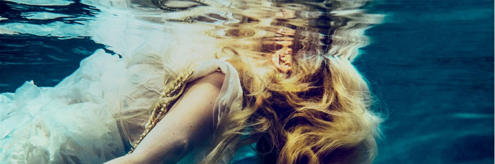
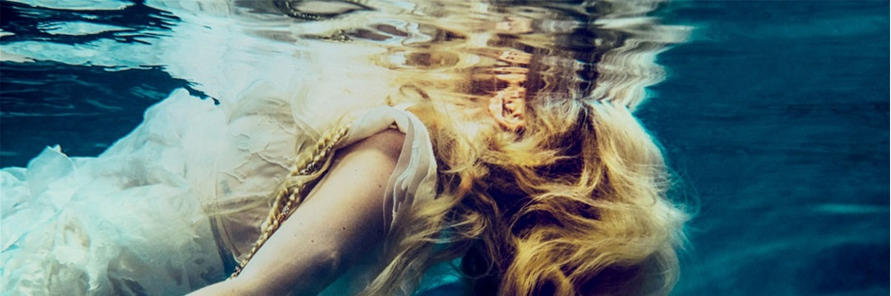

About
Career
1999 to 2001
After winning a country radio singing contest, she performs with Shania Twain, then at
the height of her fame, at the Corel Centre in Ottawa.
Cliff Fabri sees Lavigne perform at a Chapters book store in Kingston and becomes her
first manager.
Her demos attract the attention of Arista Records, whose president, Antonio "L.A."
Reid, signs Lavigne on the spot. Her two-record deal is reportedly worth $1.25 million, with a $900,000 publishing
advance.
After Lavigne plays the trio a System of a Down-esque track that she's written, they
tell her to come back the next day and quickly write two songs, one of which is called "Complicated." Reid and
Arista A&R man Josh Sarubin are floored and ask the trio to knock out a further ten tracks with the singer.
2002 to 2003
Lavigne finishes recording her debut in January 2002. First single "Complicated" is
released in May. Let Go is released in June and is an instant smash.
Let Go hits #2 in the U.S. and #1 in Canada, Australia and the UK, where the
now-17-year old Lavigne is the first solo female artist to have a #1 album.
"Sk8er Boi" and "I'm With You" also make the Top 10 in many countries and Lavigne
starts racking up awards: she's nominated for eight Grammys, wins four Junos and the MTV Award for Best New Artist.
In December 2002. Lavigne embarks on her first tour, dubbed Try and Shut Me Up.
Her cover of "Knockin' On Heaven's Door" appears on the War Child benefit compilation
Peace Songs.
The Try and Shut Me Up tour ends in May 2003, with the final date in Buffalo filmed and
released as a live album/DVD. The set list features two covers: Green Day's "Basket Case" and Bob Dylan's "Knocking
on Heaven's Door."
2004
After winning a country radio singing contest, she performs with Shania Twain, then at
the height of her fame, at the Corel Centre in Ottawa.
Cliff Fabri sees Lavigne perform at a Chapters book store in Kingston and becomes her
first manager.
Her demos attract the attention of Arista Records, whose president, Antonio "L.A."
Reid, signs Lavigne on the spot. Her two-record deal is reportedly worth $1.25 million, with a $900,000 publishing
advance.
After Lavigne plays the trio a System of a Down-esque track that she's written, they
tell her to come back the next day and quickly write two songs, one of which is called "Complicated." Reid and
Arista A&R man Josh Sarubin are floored and ask the trio to knock out a further ten tracks with the singer.
2005 to 2008
Lavigne wins Artist of the Year at the 2005 Junos.
As part of the handoff to Vancouver, who will host in 2010, Lavigne performs her song
"Who Knows" at the closing ceremonies of the 2006 Winter Olympics in Turin, Italy.
In May 2006, she lends her voice to the animated feature film Over the Hedge, based on a
long-running comic strip.
"Keep Holding On" is included in the fantasy film Eragon in December 2006.
The Best Damn Thing is released in April 2007 and hits #1 on the Billboard 200.
She also continues to support a number of charitable causes, covering John Lennon's "Imagine"
for the Instant Karma: The Amnesty International Campaign to Save Darfur compilation.
In December 2007, Lavigne makes Forbes list of "Top 20 Earners Under 25."
Lavigne embarks on the "Best Damn World Tour" in March 2008, hitting countries across North
America, Europe and Asia.
She launches her debut clothing line Abbey Dawn with U.S. retailer Kohls in July 2008.
She begins recording her fourth album in her home studio in November 2008.
2009 to 2010
She announces her own perfume, Black Star, in March 2009.
In January 2010, Lavigne incorporates designs inspired by the new live-action Tim Burton
version of Alice in Wonderland into her Abbey Dawn line.
Her song "Alice" plays over the film's closing credits and is included on the companion
compilation Almost Alice.
Lavigne performs at the 2010 Olympics Closing ceremony in Vancouver.
Along with a host of Canadian artists, including Nelly Furtado, Drake and Tom Cochrane,
Lavigne sings on K'naan's charity single "Wavin' Flag," whose proceeds go to victims of the 2010 Haiti earthquake.
The same year, she launches her own charity, the Avril Lavigne Foundation, aimed at young
people with serious illnesses and disabilities.
A second perfume, Forbidden Rose, arrives in the summer.
2011 to 2013
After a two-and-a-half year wait, Goodbye Lullaby arrives in March 2011.
Goodbye Lullaby debuts at #4 on the Billboard 200 and #2 in Canada, her lowest peak placements
in both countries.
Lavigne heads out on the "Black Star Tour" in April 2011.
She moves from Arista to Epic Records, now headed by Reid, who originally signed the singer.
She begins co-writing with Chad Kroeger, frontman of oft-maligned Canadian rock band
Nickelback, in March 2012.
An avid anime fan, Lavigne contributes covers of Nickelback's "How You Remind Me" and Joan
Jett's "Bad Reputation" to the anime film One Piece Film: Z, which is released in December 2012.
In November 2013, Avril Lavigne is released.
The record goes gold in the U.S. and posts strong sales and chart placements around the globe.
2014 to 2017
In December 2014, Lavigne, still only 30 years old, is diagnosed with Lyme disease.
In April 2015, she releases "Fly," a leftover from the Avril Lavigne sessions. It's released
digitally through her charity in support of the 2015 Special Olympics World Summer Games. She performs the song at
the Games' opening ceremonies in July.
In August 2015, Lavigne joins Taylor Swift onstage at the San Diego stop of Swift's 1989 world
tour and they duet on "Complicated."
After two years of treatment, during which she spent many days in bed, unsure if she'd live
through the ordeal, Lavigne begins recording for a new album.
In January 2017, she appears on the song "Listen" by Japanese rock band One OK Rock.
In March 2017, she signs a new deal with BMG Records, with plans to release an album within the
calendar year.
In September 2017, she lends her vocals to a track on electronic production duo Grey's Chameleon
EP.
2018 to 2019
In the spring, Lavigne voices Snow White in the animated film Charming, which also features Demi
Lovato and Sia, though the film remains available only in Europe and Africa.
In September 2018, Lavigne releases "Head Above Water," her first new music in over three years
and the first music she made after her diagnosis. It's the title track from her sixth album, which is released in
February 2019, more than five years since her last album.
 
